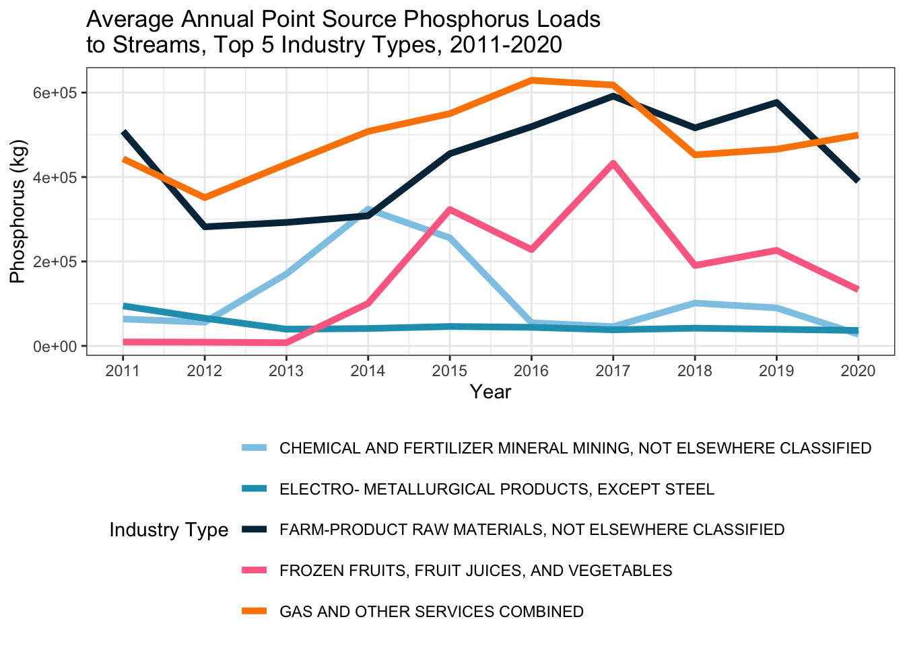
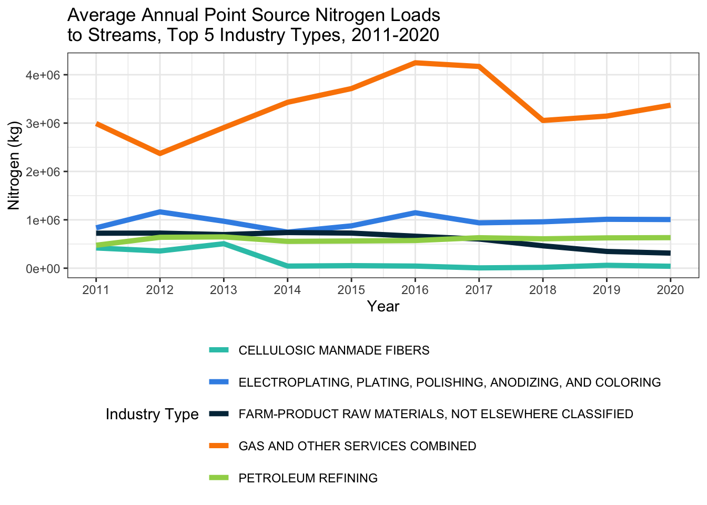

library(tidyverse)
library(knitr)
library(kableExtra)
# Pointing to list of SIC codes and their descriptors from Google Drive.
url <- "https://docs.google.com/spreadsheets/d/1CZ36IbC3D-GbMkWirrWxqB1hPu-y0QA0iXrwyic62pk/pub?output=csv"
# Loading in USGS data sets and SIC code list.
pyearly <- read_csv("TPyrloads.csv", show_col_types = FALSE)
nyearly <- read_csv("TNyrloads.csv", show_col_types = FALSE)
facilities <- read_csv("Facilities_CONUS.csv", show_col_types = FALSE)
sic_list <- read.csv(url)
# Converting the SIC code on the USGS facilities list to align with SIC code on SIC list. The SIC codes often start with a 0 which you lose if the data is stored as a numeric.
facilities$sic_code <- as.character(facilities$sic_code)
# Creating a data frame that adds industry type (identified by the SIC code) to the USGS facilities list and then adds industry type to the yearly phosphorus and nitrogen data.
fac_type <- left_join(facilities, sic_list, by = "sic_code")
pyearly_type <- pyearly %>%
left_join(fac_type %>% select(npdes, sic_code, Industry.Type), by = "npdes")
nyearly_type <- nyearly %>%
left_join(fac_type %>% select(npdes, sic_code, Industry.Type), by = "npdes")
# Creating a data frame of the annual average for the top 5 industry types, 2011-2020 - PHOSPHORUS.
values_to_keep <- c("4932", "5159", "1479", "3313", "2037")
p_topfive <- pyearly_type %>%
filter(sic_code %in% values_to_keep,
year >= 2011) %>%
group_by(Industry.Type, year) %>%
summarize(loadTP = round(mean(loadTP)), .groups = 'drop')
# Creating a table summarizing this data.
p_topfive_wide <- p_topfive %>%
pivot_wider(names_from = Industry.Type, values_from = loadTP)
p_topfive_wide$Year <- as.factor(p_topfive_wide$year)
p_topfive_wide <- p_topfive_wide %>% select(-year) %>%
relocate(Year)
p_topfive_wide %>%
kable(format.args = list(big.mark = ","),
caption = "Average Annual Point Source Phosphorus Loads to Streams (in kg), Top 5 Industry Types, 2011-2020",
align = "c") %>%
kable_paper| Year | CHEMICAL AND FERTILIZER MINERAL MINING, NOT ELSEWHERE CLASSIFIED | ELECTRO- METALLURGICAL PRODUCTS, EXCEPT STEEL | FARM-PRODUCT RAW MATERIALS, NOT ELSEWHERE CLASSIFIED | FROZEN FRUITS, FRUIT JUICES, AND VEGETABLES | GAS AND OTHER SERVICES COMBINED |
|---|---|---|---|---|---|
| 2011 | 63,716 | 94,805 | 508,600 | 9,325 | 443,200 |
| 2012 | 56,143 | 65,490 | 282,100 | 8,814 | 351,200 |
| 2013 | 170,500 | 39,600 | 292,500 | 7,637 | 430,500 |
| 2014 | 323,800 | 41,195 | 308,200 | 100,882 | 508,100 |
| 2015 | 255,900 | 46,000 | 455,300 | 323,005 | 550,200 |
| 2016 | 54,824 | 44,030 | 519,400 | 228,037 | 629,100 |
| 2017 | 45,628 | 38,160 | 591,600 | 432,695 | 617,900 |
| 2018 | 101,522 | 42,010 | 516,500 | 190,485 | 452,500 |
| 2019 | 89,933 | 39,440 | 576,600 | 226,304 | 465,900 |
| 2020 | 27,454 | 36,520 | 389,800 | 133,131 | 499,300 |
# Creating a line graph summarizing this data.
p_topfive %>% ggplot(aes(x = year,
y = loadTP,
col = Industry.Type))+
geom_line(linewidth = 1.75)+
labs(x = "Year",
y = "Phosphorus (kg)",
title = "Average Annual Point Source Phosphorus Loads\nto Streams, Top 5 Industry Types, 2011-2020",
col = "Industry Type")+
scale_color_manual(values = c("#8ecae6","#219ebc","#023047","#fb6f92", "#fb8500"))+
scale_x_continuous(breaks = unique(p_topfive$year))+
theme_bw()+
theme(legend.position = "bottom")+
guides(color = guide_legend(nrow = 5, byrow = TRUE))
# Creating a data frame of the annual average for the top 5 industry types, 2011-2020 - NITROGEN
values_to_keep2 <- c("4932", "3471", "2911", "5159", "2823")
n_topfive <- nyearly_type %>%
filter(sic_code %in% values_to_keep2,
year >= 2011) %>%
group_by(Industry.Type, year) %>%
summarize(loadTN = round(mean(loadTN)), .groups = 'drop')
# Creating a table summarizing this data.
n_topfive_wide <- n_topfive %>%
pivot_wider(names_from = Industry.Type, values_from = loadTN)
n_topfive_wide$Year <- as.factor(n_topfive_wide$year)
n_topfive_wide <- n_topfive_wide %>% select(-year) %>%
relocate(Year)
n_topfive_wide %>%
kable(format.args = list(big.mark = ","),
caption = "Average Annual Point Source Nitrogen Loads to Streams (in kg), Top 5 Industry Types, 2011-2020",
align = "c") %>%
kable_paper| Year | CELLULOSIC MANMADE FIBERS | ELECTROPLATING, PLATING, POLISHING, ANODIZING, AND COLORING | FARM-PRODUCT RAW MATERIALS, NOT ELSEWHERE CLASSIFIED | GAS AND OTHER SERVICES COMBINED | PETROLEUM REFINING |
|---|---|---|---|---|---|
| 2011 | 418,500 | 834,180 | 723,500 | 2,992,000 | 474,281 |
| 2012 | 355,400 | 1,164,607 | 725,500 | 2,371,000 | 638,661 |
| 2013 | 506,000 | 970,890 | 694,800 | 2,906,000 | 647,563 |
| 2014 | 43,480 | 745,444 | 737,100 | 3,430,000 | 554,683 |
| 2015 | 52,700 | 875,340 | 725,800 | 3,714,000 | 563,051 |
| 2016 | 43,670 | 1,146,454 | 661,000 | 4,247,000 | 572,104 |
| 2017 | 6,288 | 937,609 | 602,400 | 4,171,000 | 630,411 |
| 2018 | 16,990 | 958,971 | 462,800 | 3,054,000 | 607,547 |
| 2019 | 59,790 | 1,011,180 | 346,200 | 3,145,000 | 626,737 |
| 2020 | 39,800 | 1,005,878 | 311,800 | 3,370,000 | 631,607 |
# Creating a line graph summarizing this data.
n_topfive %>% ggplot(aes(x = year,
y = loadTN,
col = Industry.Type))+
geom_line(linewidth = 1.75)+
labs(x = "Year",
y = "Nitrogen (kg)",
title = "Average Annual Point Source Nitrogen Loads\nto Streams, Top 5 Industry Types, 2011-2020",
col = "Industry Type")+
scale_color_manual(values = c("#2EC4B6","#3C91E6","#023047","#fb8500", "#9FD356"))+
scale_x_continuous(breaks = unique(n_topfive$year))+
theme_bw()+
theme(legend.position = "bottom")+
guides(color = guide_legend(nrow = 5, byrow = TRUE))